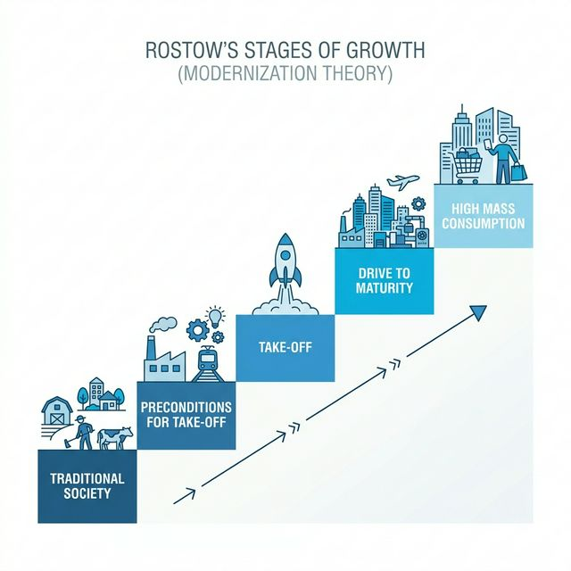
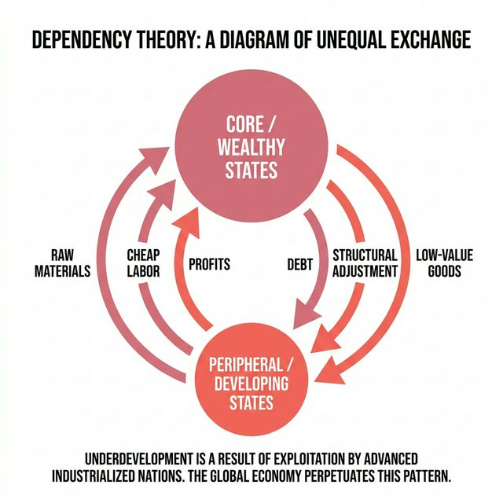
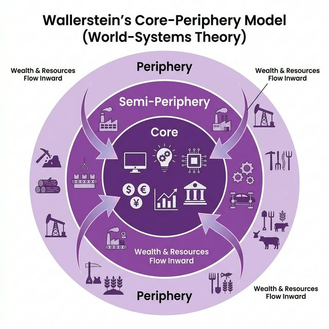
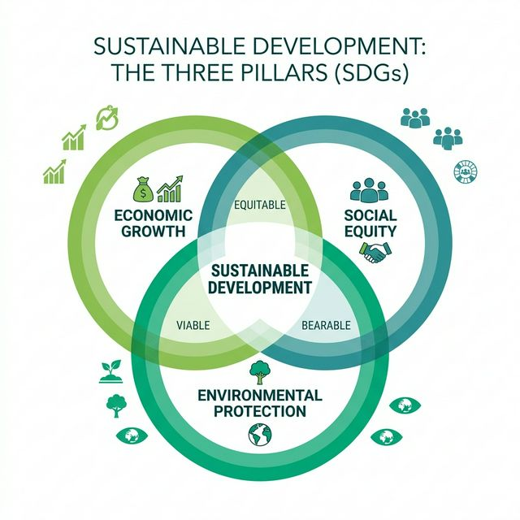

01 — The Four Core Theories
Theory 01
Modernization Theory
W.W. Rostow · 1960
Development is linear: all societies progress through five stages from "traditional" to "high mass consumption." The Western path is the universal model; development = industrialization + free markets + democratic governance.
Key Claims
- Underdevelopment is an internal condition, not externally imposed
- Foreign investment and trade integration accelerate progress
- Traditional cultures and institutions are barriers to growth
Strengths & Limits
- Useful for: Explaining rapid growth in East Asian economies
- Criticized for: Ethnocentrism, ignoring colonialism, conflating GDP with well-being
Quick Case Examples
South Korea
Singapore
Post-WWII Japan
Theory 01 — Modernization Theory

Rostow's five stages of economic growth — a linear model where all societies follow the same path from traditional agriculture to high mass consumption.
Theory 02
Dependency Theory
A.G. Frank · R. Prebisch · 1960s–70s
Underdevelopment is not a "starting point" — it is actively produced by integration into the global capitalist system. Wealthy states develop at the expense of poorer states through unequal exchange, debt, and structural adjustment.
Key Claims
- The global economy structurally disadvantages the Global South
- Aid and FDI can entrench dependency rather than alleviate poverty
- Commodity-dependent economies face declining terms of trade
Strengths & Limits
- Useful for: Explaining persistent poverty despite decades of aid
- Criticized for: Overly deterministic; struggles to explain cases like China's rise
Quick Case Examples
Haiti
DRC (Cobalt)
Zambia (Copper)
Theory 02 — Dependency Theory

The cycle of unequal exchange — raw materials, cheap labor, and profits flow upward to core states, while debt, structural adjustment, and low-value goods flow downward to the periphery.
Theory 03
Core-Periphery Model
I. Wallerstein · World-Systems Theory · 1974
The world economy is a single system divided into core (wealthy, industrialized), semi-periphery (emerging), and periphery (resource-exporting, dependent) states. Wealth flows upward; position in the system — not internal policy — determines development outcomes.
Key Claims
- Global inequality is structural, not a temporary phase
- Core states set the rules of trade, finance, and governance
- Semi-peripheral states can shift position — but the hierarchy persists
Strengths & Limits
- Useful for: Mapping global power asymmetries; environmental injustice
- Criticized for: Underestimating state agency; static categories
Quick Case Examples
Core: USA, EU
Semi-P: China, India
Periphery: Chad, Myanmar
Theory 03 — Core-Periphery Model

Wallerstein's three-zone world system — wealth and resources flow inward from the periphery through the semi-periphery to the core, maintaining structural global inequality.
Theory 04
Sustainable Development
Brundtland Commission · 1987 / UN SDGs · 2015
Development that "meets the needs of the present without compromising the ability of future generations to meet their own needs." The UN's 17 SDGs operationalize this into measurable targets across social, economic, and environmental dimensions.
Key Claims
- Economic growth, social equity, and environmental protection must be balanced
- Environmental limits are real — infinite growth on a finite planet is impossible
- Development must be inclusive and intergenerational
Strengths & Limits
- Useful for: Normative evaluation; framing any question with a values lens
- Criticized for: Can be vague; states can "SDG-wash" without real change
Quick Case Examples
Costa Rica (renewables)
Bhutan (GNH)
Paris Agreement
Theory 04 — Sustainable Development

The three pillars of sustainable development — economic growth, social equity, and environmental protection must overlap to achieve truly sustainable outcomes.
02 — Development Indices at a Glance
| Index |
What It Measures |
Why It Matters for Exams |
GDP per capita |
Average economic output per person — the most common (and most limited) measure of wealth. |
Modernization Theory's preferred metric. Useful but hides inequality and non-monetary well-being. Pair with HDI or Gini to critique. |
HDI Human Development Index |
Composite of life expectancy, education (mean/expected years of schooling), and GNI per capita. |
Shows that wealth ≠ well-being. Cuba has a higher HDI than many wealthier states. Strong for challenging Modernization Theory. |
IHDI Inequality-adjusted HDI |
The HDI discounted for inequality within each dimension (health, education, income). |
Reveals how much development is "lost" to inequality. Powerful alongside Dependency Theory and Core-Periphery. |
Gini Coefficient |
Income/wealth inequality within a country (0 = perfect equality, 1 = total inequality). |
Directly challenges the assumption that GDP growth benefits everyone. Key for Dependency Theory critiques. |
MPI Multidimensional Poverty Index |
Measures overlapping deprivations in health, education, and living standards at household level. |
Captures lived poverty that GDP misses. Useful for showing periphery-state conditions and SDG progress. |
EPI Environmental Performance Index |
Ranks countries on environmental health (air quality, sanitation) and ecosystem vitality (biodiversity, climate). |
Directly supports Sustainable Development analysis. Shows that high GDP doesn't guarantee environmental quality. |
Ecological Footprint |
How much biologically productive land/water a population uses vs. what is available. |
Core states have footprints far exceeding their biocapacity — powerful for Core-Periphery + sustainability arguments. |
SDG Index |
Tracks progress toward all 17 UN Sustainable Development Goals by country. |
The most direct measure for Sustainable Development analysis. Use it to evaluate whether rhetoric matches results. |
03 — Theory ↔ Index Mapping
Which indices support or challenge each theory? Use this to select the right evidence for your argument.
GDP per capita
HDI
IHDI
Gini Coefficient
MPI
EPI
Eco. Footprint
SDG Index
Supports the theory
Challenges the theory
Neutral / limited relevance
04 — Case Studies: Multi-Theory Application
Each case can be analyzed through multiple theories. Practice choosing the lens that best fits the question.
🇨🇩 DRC & Cobalt Mining
Sub-Saharan Africa
The DRC holds ~70% of global cobalt reserves, essential for EV batteries, yet ranks among the lowest on HDI (0.479). Multinational extraction benefits core-state tech industries while local communities face environmental destruction and child labor.
Dependency
Core-Periphery
Sustainability
🇰🇷 South Korea's Transformation
East Asia
From one of the poorest nations in 1960 to an OECD high-income economy by 1996. State-led industrialization, heavy investment in education, and strategic integration into global trade. HDI rose from 0.52 to 0.93.
Modernization
Core-Periphery
🇨🇷 Costa Rica's Green Model
Central America
Abolished its military in 1949 and redirected spending to health and education. Now generates >98% of electricity from renewables. HDI of 0.81 despite modest GDP — a direct challenge to the "growth first" model.
Sustainability
Modernization ✗
🇧🇹 Bhutan & Gross National Happiness
South Asia
Replaced GDP with GNH as its primary development metric, measuring psychological well-being, cultural preservation, ecological diversity, and good governance. A living critique of Western development metrics.
Sustainability
Modernization ✗
🇭🇹 Haiti's Structural Dependency
Caribbean
Forced to pay France for its own independence until 1947. Decades of structural adjustment policies from IMF/World Bank weakened local agriculture. Despite billions in aid after the 2010 earthquake, HDI remains 0.535.
Dependency
Core-Periphery
🇨🇳 China's Rise
East Asia
Moved from periphery to semi-periphery/near-core in 40 years. Lifted 800 million from poverty (MPI), but at significant environmental cost (high Eco Footprint, poor EPI). Complicates every theory.
Modernization
Core-Periphery
Sustainability ✗
05 — Exam Strategy: The 4-Move Framework
How to Deploy These Theories in a Timed Response
Move 1 — Frame
Set the Normative Lens
Open with the Sustainable Development framework. Define what "development" means in context and signal you're evaluating outcomes, not just growth.
Move 2 — Analyze
Explain the Structure
Use Core-Periphery or Dependency Theory to explain why the situation exists. Who benefits? Who is marginalized? What structures maintain inequality?
Move 3 — Critique
Challenge the Dominant View
Introduce Modernization Theory as the counter-argument, then use indices (HDI vs. GDP, Gini, MPI) to show its limitations. This demonstrates balanced evaluation.
Move 4 — Evidence
Deploy Indices & Cases
Ground every claim in specific data. Name the index, cite the figure, and link it to the theory. "The DRC's HDI of 0.479 despite $24B in cobalt exports illustrates Dependency Theory's core claim…"